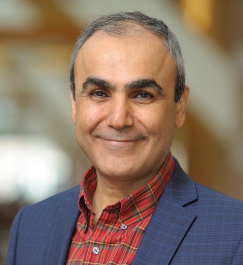

Emad Tajkhorshid is an Endowed Chair in the Biochemistry, holding appointments also in Chemistry, Bioengineering, Biophysics, Computational Science and Engineering, and the College of Medicine at UIUC. He received his Ph.D. in molecular biophysics from Heidelberg before moving to UIUC, where he did his postdoctoral studies in computational biophysics. He joined the faculty of Biochemistry at UIUC in 2007 and was fast tracked to associate professor in 2010 and then to full professor in 2013. In 2015, he was named a University of Illinois Scholar and an Endowed Chair in Biochemistry. His laboratory pioneers computational techniques to investigate membrane proteins, in order to achieve the most detailed microscopic view of their function, e.g., mechanistic studies of membrane transport proteins, principles of energy transduction and coupling and lipid modulation in signaling proteins. He has authored nearly 300 research articles (H-index 79) with more than 38,000 citations.